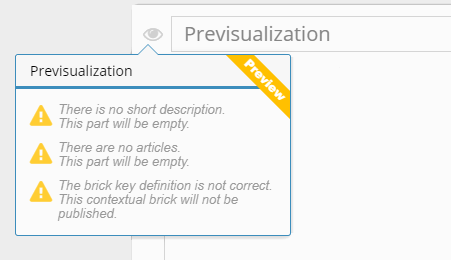

|
The parameters exist only for bricks. |
They coordinate development and publishing.
When creating a brick, the following elements are mandatory:
- a title: the
 icon to the left of the field lets you access the preview. You can see what your documentation looks like once exported in a pop-up window. The window also warns you about potentially missing information:
icon to the left of the field lets you access the preview. You can see what your documentation looks like once exported in a pop-up window. The window also warns you about potentially missing information:

- a brick type (for UI help only): represents the type of user interface being documented: window, tab, panel, etc.
- brick keys (for UI help only): the unique ID of the interface being documented. It is used to link the user help to the UI. Developers can easily find this ID.
If the brick you are creating should not be exported, check No keys because no need to publish this brick. If you check this, previsualization becomes unavailable.
We also recommend you add a reference image. It lets you start documenting the interface even if you can't access it. It is also a record of the state the interface was in the last time it was documented. This is useful to check the documentation is up to date.
The reference image is not published, it's an internal image for work purposes.